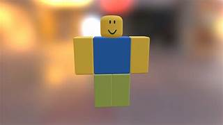

começo do roblox
Roblox (anteriormente estilizado como ROBLOX) é uma plataforma de jogos MMO e sandbox baseados normalmente em mundo aberto, multiplataforma e simulação que permite criar do zero seu próprio mundo virtual chamado de 'experiência' ou 'place' onde os milhares de jogadores da plataforma podem interagir.
A Roblox possui mais de 500.000 criadores de experiências e 700 milhões de usuários ativos mensais, que já registraram mais de 300 milhões de horas de uso. O grupo de desenvolvimento da experiência,Roblox Corporation, emprega mais de 1000 pessoas no mundo inteiro.
Em 2019, a Roblox se tornou o "jogo" mais popular no mundo.
boneco mais conhecido do roblox [noob]
Noob (também comumente escrito como n00b, nueb, newb, newbie, nob, nub ou neb) é uma gíria da Internet usada para descrever um jogador novo ou inexperiente. Geralmente significa “recém-chegado” que, neste sentido, é uma pessoa inexperiente em determinada atividade. Depois de muito tempo de uso, o newb com erro ortográfico tornou-se uma palavra própria. Até hoje, as pessoas confundem constantemente “noob” com “newb”, alegando que significa um jogador novo ou inexperiente, mas geralmente não é essa a intenção do usuário da palavra.
criado do roblox
David Baszucki (nascido em 20 de janeiro de 1963), também conhecido por seu nome de usuário no Roblox, david.baszucki; e nome de usuário de sua conta secundária, Builderman, é um empresário, engenheiro e inventor norte-americano nascido no Canadá.[1] Normalmente é conhecido como cofundador e CEO da Roblox Corporation. Atualmente, Baszucki reside em San Mateo, Califórnia. Anteriormente, cofundou e foi CEO da Knowledge Revolution, que foi adquirida pela MSC Software em dezembro de 1998.